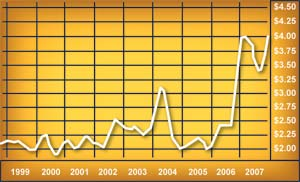
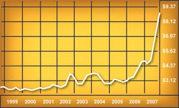

Biofuels, particularly ethanol, have had plenty of recent hype as a possible homegrown replacement for gasoline. However, production of corn-based ethanol in the United States is driving up grain prices and possibly harming the environment.
A recent report from the Earth Policy Institute says that grain used for alternative fuels in the United States alone exploded from 54 million tons in 2006 to 81 million tons in 2007. This doubled the annual growth in world demand for grain. The report also says that world grain production has failed to meet demand in seven of the last eight years, and using grain for biofuels is increasing this deficit. Some countries have even restricted or banned grain exports to avoid further rises in domestic food prices. The resulting “agflation” has created record prices for corn, soybeans and wheat.
The Union of Concerned Scientists adds that when you consider the energy-intensive inputs that go into some methods of growing corn (such as tilling, increased land use, and fertilizer and herbicide/pesticide use), plus the production of the fuel itself, ethanol may not represent a viable long-term solution.
|
 NATE SKOW; DATA: TRADINGCHARTS.COM Increased demand for corn has raised the price. (Future prices in dollars per bushel.) |
 NATE SKOW; DATA: TRADINGCHARTS.COM Increased demand for corn also has an effect on the price of soybeans, wheat and other grains. (Future prices in dollars per bushel.) |
|